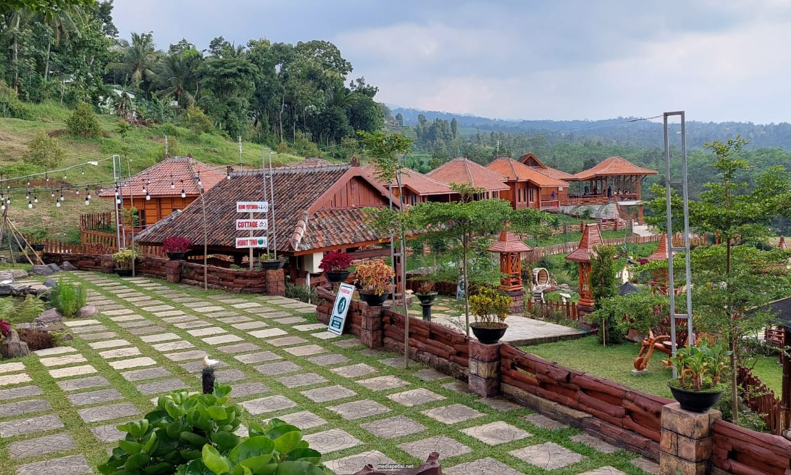
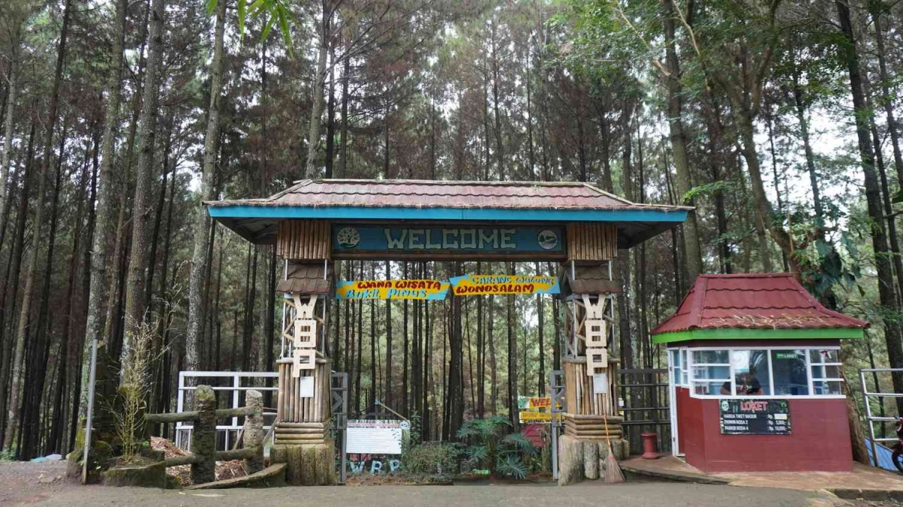
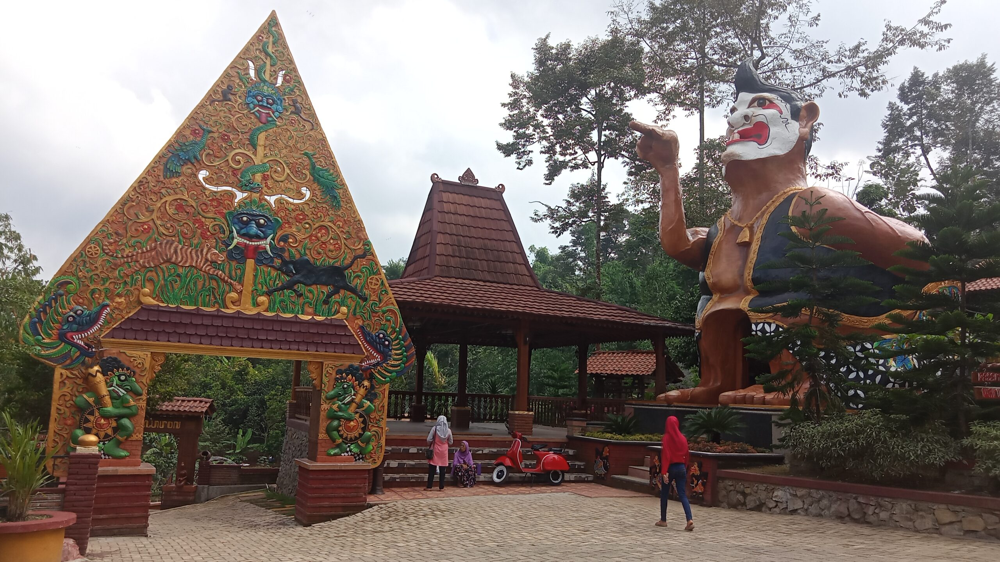

Jombang
Sejarah Singkat Jombang
Jombang termasuk kabupaten yang masih muda usia, setelah memisahkan diri dari Mojokerto...
Peninggalan sejarah seperti Candi Ngrimbi, Pulosari Bareng, bahkan dalam lambang daerah Jombang...
Letak Geografis
- Luas wilayah kabupaten: 115.950 Ha atau 1.159,5 Km²
- Terletak antara 7.20' dan 7.45' Lintang Selatan, 5.20º - 5.30º Bujur Timur
- Batas-batas wilayah kabupaten:
- Sebelah Utara: Kabupaten Lamongan
- Sebelah Selatan: Kabupaten Kediri
- Sebelah Timur: Kabupaten Mojokerto
- Sebelah Barat: Kabupaten Nganjuk
- Kecamatan terluas: Kabuh (13.233 Ha), terkecil: Ngusikan (34,980 Ha)
- Curah hujan: 1.750 s/d 2.500 mm/tahun
Wisata di Jombang
-
Kampung Durian

Destinasi agrowisata Duran Duren berlokasi di Dusun Notorejo, Kecamatan Wonosalam. Destinasi ini menawarkan pengalaman wisata edukasi dan agrowisata berbasis durian.
-
Bukit Pinus

Terletak di Desa Carangwulung, Bukit Pinus menawarkan suasana hutan pinus asri dan pengalaman relaksasi yang mendalam.
-
Dalem Simbah

Dalem Simbah adalah wisata heritage dengan nuansa budaya Jawa yang kental, menampilkan rumah joglo dan benda-benda antik.
Kontak
- Email: irhamchakim@gmail.com
- Telepon: 0899-8985-156